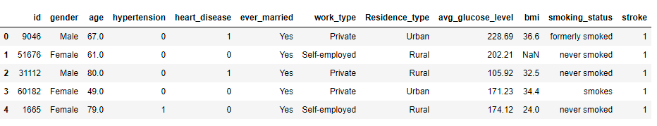
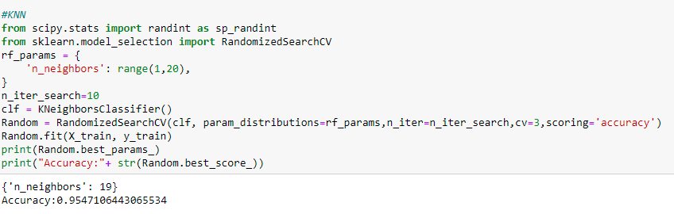

Hyperparameter Tuning in Classification Models
Flourishing companies that make the most effective use of data science create exceptional models. A model is a Machine Learning algorithm that is a combination of model data and prediction algorithm. The biggest challenge for data scientists and ML researchers is to improve the accuracy of the model using different methods and techniques.
Among them, one of the biggest challenges is tuning the Hyperparameters and model parameters. Hyperparameter Tuning is the process of determining the right combinations of hyperparameters that allows the model to maximize performance.
A Hyperparameter is something external to the model are often used in processes to help estimate model parameters, while a model parameter is learned from the data and is internal to the model and is needed while making predictions. The coefficients in linear regression are a good example of the model parameter, and K in KNN is an example of a hyperparameter. In short, the parameters which can't be estimated from the data are called model hyperparameters which are specified manually.
Why Hyperparameter tuning?
Having an optimal combination of hyperparameters and tuning it according to the dataset can improve the predictive accuracy of the model. It controls the overall behaviour of the ML model. The most commonly used types of hyperparameter tuning are Grid Search and Random Search.
Let’s understand hyperparameter tuning better with the help of a dataset. We will consider the stroke prediction dataset from the healthcare domain. It has 12 features as shown:
The target variable is the stroke column - whether a person has a stroke or not.
I have done some basic data cleaning such as encoding categorical variables, null value treatment and I built different classification models for the dataset. Random forest and KNN models gave us the highest accuracy of 88% and 90%.
Random search runs the search over some number of random parameter combinations while Grid search runs the search over all parameter sets in the grid. I did grid search and random search for KNN and Random forest to get to an optimal set of hyperparameters which gave us an improved predictive accuracy on the model as shown below:
N_estimators , max_features, max_depth,min_samples_leaf are the hyperparameters used.
N_neighbors (K) is the hyperparameter used here and the optimal value of K is 19.
Let's compare the accuracies of the classifiers before and after hyperparameter tuning by plotting bar plots.
Finally, I would say, “A data scientist who works to get a good predictive accuracy should focus on feature engineering at first and finally work on hyperparameter tuning to reduce overfitting and improve model performance as without having good features, there will be no effect of hyperparameter tuning on the model.”